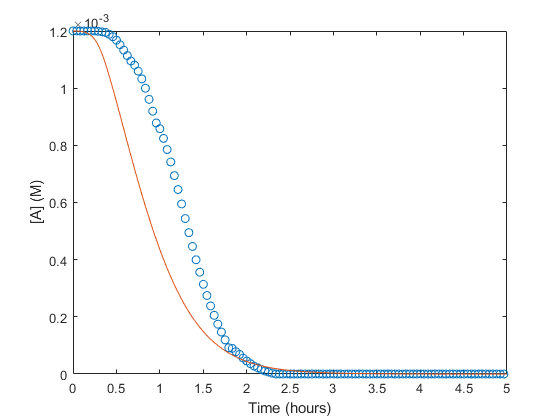
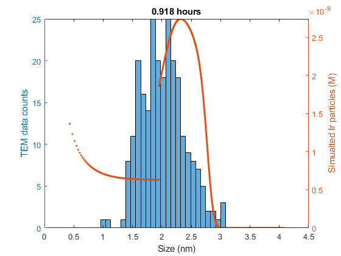
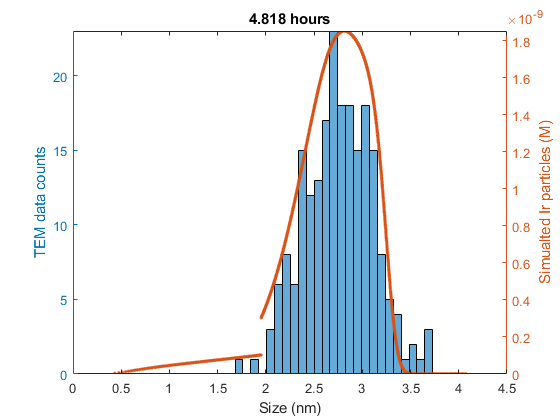
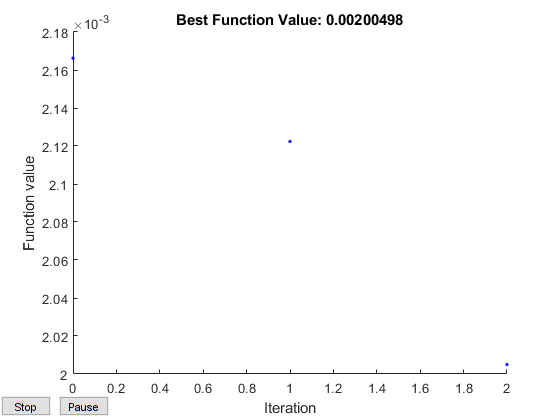

How To Run MEPBM Code
- Navigate to your ../mepbm/src/ directory.
- Load your data by running TEMdata.m which saves the data to the workspace and creates mat files in the ./data/ directory.
- Choose an option below.
Contents
Run a single simulation
First set the parameter values, then run the simulation.
The solution sol and a log of the parameters will be saved in a folder created with the date and time the simulation was run.
The folder name is ./sim_logs/yyyy-MM-dd_HH-mm-ss/, the parameters are saved in params.log and the solution as a mat file.
% Set parameter values mech = '3step_alt'; kargs = [11.3; 3.6e-2; 7.27e4; 64512; 16294; 5566; 274]; ic = 0.0012; tend = 5.05; maxsize = 2500; % Run the simulation sol = solve_mepbm(mech,kargs,ic,tend,maxsize);
Plot a solution
Once you have sol, you can plot it against your precursor concentration with plot_precursor(pcdata,sol) or against histogram data with plot_histogram(sol,histdata,maxsize,time)
plot_precursor(CH,sol) plot_histogram(sol,S2,maxsize,0.918) plot_histogram(sol,S5,maxsize,4.818)  
Run a fit
Use the function fit_mepbm(mech,kconst,kvar,ic_in,tend,maxsize,fit_type,fit_data,lb,ub,options) which has the same outputs as patternsearch.
The rhs parameters must be split into kconst and kvar. Fitting is done over kvar. This requires the rhs function in the mepbm_rhs.m file to have arguments in the correct order.
fit_type is 'precursor' or 'histogram', with approriate fit_data.
For example: rhs_3step_alt(~,n,S,kf,kb,k1,k2,k3,M). kconst = [S,kf,kb] and kvar = [k1,k2,k3,M] will fit over the ki's and M.
The lower and upper bound constraints lb and ub, and options are optional arguements. The bounds must be given for options to be given.
The default behavior is lb = [0,...,0], ub = [Inf,...,Inf], options = optimoptions('patternsearch','Display','iter','PlotFcn',@psplotbestf,'MaxIterations',120,'CompletePoll','On').
The fit is logged in a folder ./fit_logs/yyyy-MM-dd_HH-mm-ss/. The initial parameters are saved in fit.log and each successive kvar is saved in params.log.
kconst = kargs(1:3); kvar = kargs(4:7); lb = [4.8e4; 10; 10; 10]; ub =[8e4; 60000; 60000; 2000]; options = optimoptions('patternsearch','Display','iter','PlotFcn',@psplotbestf,'MaxIterations',1,'CompletePoll','Off'); [k,fval,exitflag,output] = fit_mepbm(mech,kconst,kvar,ic,tend,maxsize,'precursor',CH,lb,ub,options);
Iter Func-count f(x) MeshSize Method
0 1 0.00216622 1
1 5 0.00212239 2 Successful Poll
2 9 0.00200498 4 Successful Poll
Maximum number of iterations exceeded: increase options.MaxIterations.
